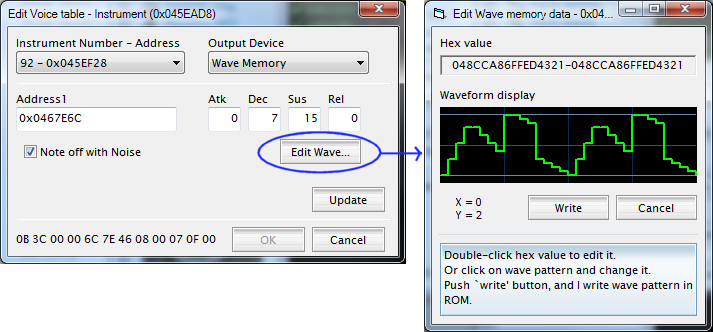
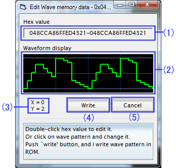
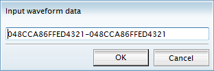

Edit Wave memory data

Edit Voice table ダイアログで、Wave Memory の Edit Wave... ボタンをクリックすると、Edit Wave memory data ダイアログが表示されます。
このダイアログでは、指定したアドレスにて読み込まれる波形メモリ音源の音色を数値及び視覚的に編集することができます。
Edit Wave memory data 画面説明

- (1) Hex value - 16進によるデータ表示
- 指定されたアドレスから読み出したデータの16進が表示されます。
表示をダブルクリックすると、値を編集できます。 16 進 16 桁をハイフンで繋いだ形式で記述してください。

- (2) Wavefrom display - 波形表示
- (1)で表示されている音色を視覚的に表示したものです。この画面をクリックもしくはドラッグして波形を変更することができます。変更すると、(1) の表示も追従して変わっていきます。
- (3) X/Y 座標表示
- (2) の上でマウスポインタが指し示している位置を示しています。 X は横軸、 Y は縦軸の値になります。
- (4) Write - 書き込みボタン
- 編集した音色を ROM イメージに書き込み、ダイアログを閉じます。
- (5) Cancel ボタン
-
- 編集中の内容を破棄してダイアログを閉じます
- 注意
- 書き換えたアドレスが別のボイステーブルでも使用されている場合、そちらの音色も変更されてしまいます。ご注意ください。